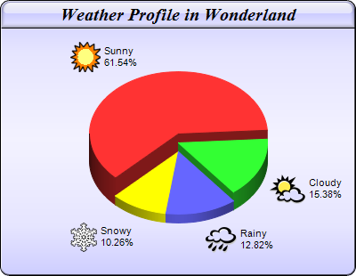

This example demonstrates using
CDML and
Parameter Substitution and Formatting to include icons in sector labels. It also demonstrates gradient background color, glass shading effect for the title and rounded corners for the chart frame.
The following is the command line version of the code in "cppdemo/iconpie". The MFC version of the code is in "mfcdemo/mfcdemo". The Qt Widgets version of the code is in "qtdemo/qtdemo". The QML/Qt Quick version of the code is in "qmldemo/qmldemo".
#include "chartdir.h"
int main(int argc, char *argv[])
{
// The data for the pie chart
double data[] = {72, 18, 15, 12};
const int data_size = (int)(sizeof(data)/sizeof(*data));
// The depths for the sectors
double depths[] = {30, 20, 10, 10};
const int depths_size = (int)(sizeof(depths)/sizeof(*depths));
// The labels for the pie chart
const char* labels[] = {"Sunny", "Cloudy", "Rainy", "Snowy"};
const int labels_size = (int)(sizeof(labels)/sizeof(*labels));
// The icons for the sectors
const char* icons[] = {"sun.png", "cloud.png", "rain.png", "snowy.png"};
const int icons_size = (int)(sizeof(icons)/sizeof(*icons));
// Create a PieChart object of size 400 x 310 pixels, with a blue (CCCCFF) vertical metal
// gradient background, black border, 1 pixel 3D border effect and rounded corners
PieChart* c = new PieChart(400, 310, Chart::metalColor(0xccccff, 0), 0x000000, 1);
c->setRoundedFrame();
// Set the center of the pie at (200, 180) and the radius to 100 pixels
c->setPieSize(200, 180, 100);
// Add a title box using 15pt Times Bold Italic font, on a blue (CCCCFF) background with glass
// effect
c->addTitle("Weather Profile in Wonderland", "Times New Roman Bold Italic", 15)->setBackground(
0xccccff, 0x000000, Chart::glassEffect());
// Set the pie data and the pie labels
c->setData(DoubleArray(data, data_size), StringArray(labels, labels_size));
// Add icons to the chart as a custom field
c->addExtraField(StringArray(icons, icons_size));
// Configure the sector labels using CDML to include the icon images
c->setLabelFormat(
"<*block,valign=absmiddle*><*img={field0}*> <*block*>{label}\n{percent}%<*/*><*/*>");
// Draw the pie in 3D with variable 3D depths
c->set3D(DoubleArray(depths, depths_size));
// Set the start angle to 225 degrees may improve layout when the depths of the sector are
// sorted in descending order, because it ensures the tallest sector is at the back.
c->setStartAngle(225);
// Output the chart
c->makeChart("iconpie.png");
//free up resources
delete c;
return 0;
}
© 2023 Advanced Software Engineering Limited. All rights reserved.